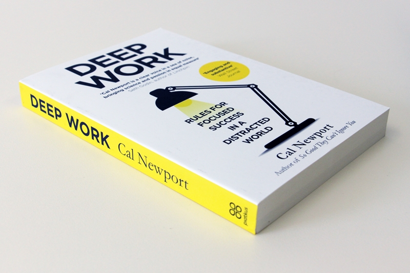

CARMEN CHUNG
29 December 2020
I recently finished the book "Deep Work" by Cal Newport, and I highly recommend it as a holiday read if you want to improve your ability to focus on complicated tasks without distraction - especially if you're a software developer. If you don't have the time (or the focus 🤣) to read the book, here are a few takeaways that I really enjoyed...
(Sidenote: If you are interested in productivity, tech, and product topics, follow me on Twitter @carmenhchung where I post about these things in an easy and fun way.)
To produce work at your peak performance level, you need to work for an extended period of time with full concentration and no distractions: what is considered "deep work". In fact, Cal argues that unless your talent and skills seriously outrank your competitors, you will find it hard thriving professionally if you can't focus without distraction for extended periods of time.
Having said that, there are some jobs where deep work is not valued. Cal gives the example of executives, like Jack Dorsey, who is notorious for having a jam packed schedule full of meetings throughout the day. He even makes himself openly available for people to come up to talk to him by sitting in communal areas at work - meaning he hardly gets distraction-free downtime at the office. Cal also thinks salesmen and lobbyists, who need constant connection to others, also fall into the category of those who may not benefit from deep work. But he argues that many people are far too quick in saying that they need to be constantly connected with others in their role, when studies have shown that it is often not the case in reality.
There exists an approach (what Cal calls the "bimodal philosophy") that believes that deep work can produce extreme productivity, but only if the person spends enough time to reach full cognitive intensity...which is apparently one full day.
Yep, you read that right. Unfettered focus on something for a few hours apparently doesn't cut it. For example, Wharton Business School professor Adam Grant (sidenote: I recommend his podcast, Work Life) take two to four days off once or twice a month to work on his research uninterrupted - not answering emails or engaging with students or colleagues.
A different approach is what Cal terms the rhythmic philosophy, which tries to make deep work a simple, regular habit (i.e. you create a rhythm out of it). Jerry Seinfield was known to cross a day off his calendar every time he wrote a joke, so that after a while, he was motivated to continue because he wanted to keep that chain of crosses going.
To make deep work a regular habit, Cal suggests using a set starting time every day for your period of deep work, in order to stop you from having to decide when to start, and helping you build the habit more easily.
Yes, there is such thing as attention fatigue. Concentration requires directed attention, which is a finite resource - similar to willpower. One study showed that after around 50 minutes of deploying concentrated attention, the capacity to focus was reduced to a low level.
To replenish this, Cal recommends doing something that does not require concentration. An example would be walking through nature, which according to one academic paper, gives your brain the opportunity to replenish your focused attention stores - even if it's in terrible weather, and even if it's only for 50 minutes.
Stop the context switching. It's actually bad for your brain, and has lasting negative effects. Research has shown that people who multitask all the time can't filter out irrelevancy or manage a working memory, and they actually trigger parts of their brain that are not relevant to the tasks they do.
Professor Clifford Nass, a professor known for his study of digital behaviour, said:
The people we talk with continually said, "look, when I really have to concentrate, I turn off everything and I am laser-focused." And unfortunately, they've developed habits of mind that make it impossible for them to be laser-focused. They're suckers for irrelevancy. They just can't keep on task.
Cal argues that once you are used to filling your time with distractions like checking your Twitter feed or Instagram, your brain has been re-wired so that it's not ready for deep work, even when you want to concentrate.
So what's the solution to our addictions to phones, email, and social media? Cal proposes that we schedule breaks from intense focused sessions where we are allowed to give in to distraction.
There is a lot of time spent moving information around in corporations, rather than doing deep work. The then-CTO of Atlantic Media, Tom Cochran, collected company-wide data on the number of emails sent every day, and how many words were in each email. By calculating that against the employees' average typing speed, reading speed, and salary, he realised that the organisation was spending over a million dollars a year to pay people to process emails. (That's not to say that some of those emails weren't important...but it's doubtful that they all were.)
If you want to reduce distractions, get your calendar out and decide in advance when you'll let yourself use the Internet/check your social media accounts/check email etc. Stay firm and don't allow yourself to do it until the allotted time - this will teach your brain that you can't just switch to something else whenever it encounters something challenging or boring. If you do need to check your email regularly, Cal suggests scheduling more numerous break blocks - but make sure you stick to schedule for the focused-attention blocks.
Ditch the social media. Rough I know. I'm not willing to do this, but I get where Cal is coming from. He proposes a strategy of banning yourself from using all social media for 30 days. He says you shouldn't tell people you're going offline (because then they may reach out to ask you why, and you'll feel important and wanted, and will likely use that as justification for being on the platform) - just stop using the services. After the 30 days is up, ask yourself if the last month would have been noticeably better if you had been able to use the platform, and whether people actually cared that you weren't on the platform.
Social media is especially toxic because the platforms offer personalised information (through things like push notifications) that arrives on an unpredictable schedule, which makes it incredibly addictive.
In conclusion, obtaining concentrated focus takes time and is like training your muscles - you need to build them up slowly by making a habit of it. Start by setting a time when you will start the deep work period every day; schedule breaks throughout the day where you are allowed to go on the Internet/check your email/do whatever it is that is a distraction to you; and if you can stomach it, keep off social media for 30 days to try to break the cycle of addiction and see whether it really is a value-add to your life.
Finally, make sure you give yourself time to recharge at the end of the day - squeezing more work out of your evenings is likely to reduce your effectiveness in the long term and be more detrimental than if you had given yourself a proper break to rest and recharge (much easier said than done for people like me - I'm currently writing this at 9pm after a full day of work! 😅).
What things have helped you increase your focus? Do you have any specific goals for being able to concentrate better in 2021? Hit me up in the comments or tweet at me here - I'd love to know!